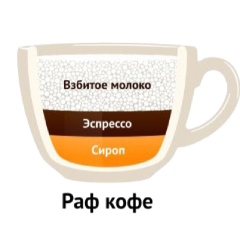

Раф-кофе
Раф-кофе (сокр. «Раф») — популярный в России и странах бывшего СССР кофейный напиток, появившийся в конце 1990-х годов. Готовится путём добавления нагретых паром сливок с небольшим количеством пены в одиночную порцию эспрессо. Основное отличие от латте — в использовании ванильного сахара (сиропа) и сливок (вместо молока). По легенде, раф-кофе появился в результате экспериментов в московской кофейне «Coffee Bean» в 1997 году. Постоянный посетитель кафе по имени Рафаэль отказывался от обычных кофейных напитков, и попросил бариста придумать что-то новое для него. В результате эксперимента троих бариста — Глеба Невейкина, Артёма Берестова и Галины Самохиной — появился кофейный напиток «для Рафа». Он был более мягким и сладким, чем обычные кофейные напитки с молоком. Позже посетители, которым полюбилась новинка, стали просить «кофе как Рафу» , и постепенно название сократилось до «Раф-кофе» или просто «Раф».
Приготовление Раф-кофе
В питчер наливают сливки с добавлением ванильного сахара (или сиропа), добавляют порцию эспрессо 35 мл. Все ингредиенты нагреваются и взбиваются до 65 °C . Нередко готовый раф посыпают молотой корицей. Существуют разнообразные вариации напитка с добавлением специфических ингредиентов: алкоголя, мёда вместо сахара, лаванды и так далее.